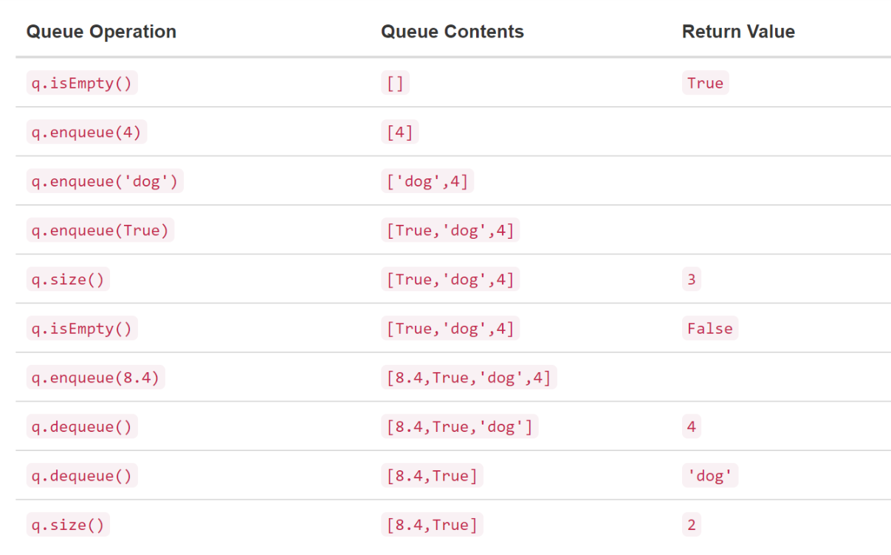

What is a Queue?
From the textbook "Problem Solving with Algorithms and Data Structures in Python", A queue is an ordered collection of items where the addition of new items happens at one end, called the “rear,” and the removal of existing items occurs at the other end, commonly called the “front.” As an element enters the queue it starts at the rear and makes its way toward the front, waiting until that time when it is the next element to be removed.
The most recently added item in the queue must wait at the end of the collection. The item that has been in the collection the longest is at the front. This ordering principle is sometimes called FIFO, first-in first-out. It is also known as “first-come first-served.”
The simplest example of a queue is the typical line that we all participate in from time to time. We wait in a line for a movie, we wait in the check-out line at a grocery store, and we wait in the cafeteria line (so that we can pop the tray stack). Well-behaved lines, or queues, are very restrictive in that they have only one way in and only one way out. There is no jumping in the middle and no leaving before you have waited the necessary amount of time to get to the front. Figure 1 shows a simple queue of Python data objects.
The queue ADT in Python has many functions.
Queue() creates a new queue that is empty. It needs no parameters and returns an empty queue.
enqueue(item) adds a new item to the rear of the queue. It needs the item and returns nothing.
dequeue() removes the front item from the queue. It needs no parameters and returns the item. The queue is modified.
isEmpty() tests to see whether the queue is empty. It needs no parameters and returns a boolean value.
size() returns the number of items in the queue. It needs no parameters and returns an integer.
As an example, if we assume that q is a queue that has been created and is currently empty, then the following image shows the results of a sequence of queue operations. The queue contents are shown such that the front is on the right. 4 was the first item enqueued so it is the first item returned by dequeue.
